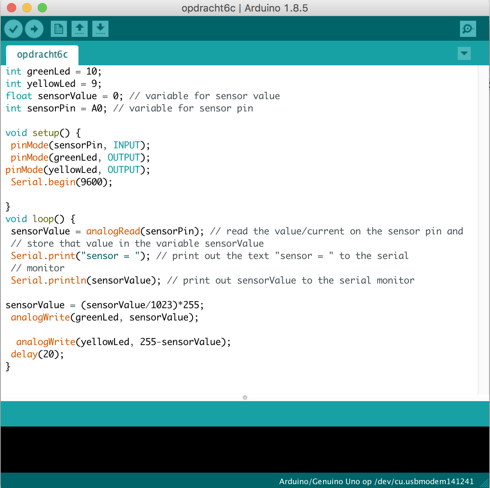

Arduino
Wat is een arduino?
Arduino is een open-source elektronica-platform voor het bouwen van prototypen. Het is gebaseerd op flexibele, eenvoudig te gebruiken hardware en software. Bestemd voor artiesten, ontwerpers en iedereen die geïnteresseerd is in het maken van interactieve objecten of omgevingen. Arduino bestaat uit een open source microcontroller en een programmeeromgeving. Arduino-projecten kunnen stand-alone worden uitgevoerd (zonder een computer), maar kunnen ook communiceren met software die op een computer draait (bijv. Processing, MaxMSP). De Arduino microcontroller kan input van sensoren ontvangen en output naar actuators verzenden.
3c
Bij deze opdracht is het de bedoeling dat het groene lampje 2x zo snel knippert dan het gele lampje. De opstelling moest er precies zo uitzien als op het plaatje, anders werkt het niet. In het filmpje is de uitkomst van de code en de opstelling te zien.
4c
Bij deze opdracht is het de bedoeling dat het ene lampje langzaam infade en het andere lampje langzaam uitfade. De opstelling moest er precies zo uitzien als op het plaatje, anders werkt het niet. In het filmpje is de uitkomst van de code en de opstelling te zien.
6c
Bij deze opdracht is het de bedoeling dat het ene lampje langzaam infade en het andere lampje langzaam uitfade als er aan het rondje gedraaid wordt. De opstelling moest er precies zo uitzien als op het plaatje, anders werkt het niet. In het filmpje is de uitkomst van de code en de opstelling te zien.

7
De Arduino kit heeft allerlei sensoren. Een lichtsensor is daar één van. De sensor meet hoeveel licht er op schijnt en hier kan je ook op inspelen. De waarden van de LEDs kan je koppelen aan de waarden van de sensor. Zo kan je een LED aan- of uitzetten door een bepaalde hoeveelheid licht op de sensor te schijnen.
8b
Arduino werkt via een poort op je laptop. Je kan via deze poort een ander programma aan Arduino koppelen. In deze opdracht koppel ik Arduino aan Procesing. Procesing is een programma waarmee je kan tekenen met code. Dit zorgt voor allerlei grappige interacties. Je kan bijvoorbeeld een blokje laten bewegen met je muis. Je kan een code in Processing ook triggeren met de sensoren van de Arduino. We gaan door middel van de lichtsensor interacten met Processing. Bij het eerste filmpje gebruikte ik de code van de opdracht. Bij het tweede voorbeeld heb ik de code van Processing aangepast, waardoor er andere vormen en interacties zijn ontstaan.

9f
De Arduino is ook te besturen door middel van buttons. Deze kun je op het breadboard klikken en linken aan bepaalde acties. Bij deze opdracht maak ik gebruik van twee buttons en een LED. Hierbij is het de bedoeling dat de LED aan gaat wanneer één van de twee buttons ingedrukt wordt, maar NIET aan gaat wanneer deze buttons tegelijkertijd worden ingedrukt.
10b
Met de Arduino kan je ook beweging regelen. Dit kan door middel van een servomotor. Dit is een kleine motor die naar een bepaalde positie kan bewegen. Het bereik van de motor is 180 graden. Met een code kan je de motor laten bewegen op leuke manieren. Je kan hem bijvoorbeeld laten 'dansen'.
11b
De servomotor van de vorige opdracht krijgt een digitale input via een code. Je kan de servomotor ook analoog bedienen. De potmeter (draaiknop) die ik al eerder gebruikte kan je gebruiken om de servomotor mee te laten draaien met je eigen beweging. Je kan ook buttons gebruiken om de servomotor te besturen. Hierbij heb ik twee buttons gebruikt die de draairichting van de motor bepalen.

12b
Met Arduino kan je ook geluid maken. Dit doe je door een klein speakertje vast te zetten op de Arduino. Deze zat ook in de Arduino kit. In de Arduino code kan je dan vervolgens verschillende tonen aangeven. Met de volgende code heb ik een leuk deuntje weten te maken. In het filmpje wordt deze afgespeeld. Het is natuurlijk niet perfect, maar misschien herken je het wel!
13e
Deze opdracht heb ik samen met iemand uit de klas geprobeert te maken, maar dit is uiteindelijk niet gelukt en ik snap er ook verder niet heel veel van. Mijn excuses!